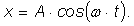

Cineva susţine că, mărind amplitudinea unei oscilaţii, se măreşte întotdeauna şi frecvenţa acesteia.
Aşa să fie oare?
Răspuns: Amplitudinea şi frecvenţa unei oscilaţii sunt caracteristici distincte ale acesteia (în general,
independente). Poţi verifica aceasta cu pendulele pe care le−ai realizat!
Un pendul cu fir de aţă este lăsat să oscileze cu o amplitudine unghiulară de 100, înregistrându−se o perioadă de oscilaţie de o secundă.
Dacă acelaşi pendul ar fi lăsat să oscileze cu o amplitudine unghiulară dublă, el ar avea de parcurs un arc cerc de lungime dublă.
Te aştepţi ca periada sa de oscilaţie să fie mai mare?
Răspuns: Uneori, în fizică, răspunsurile sunt diferite, în funcţie de subtilităţile care sunt luate în considerare. Cronometrarea "manuală" nu poate oferi o precizie prea ridicată, chiar dacă foloseşti un cronometru foarte precis, deoarece pornirea şi oprirea manuală a cronometrului introduce erori de ordinul zecimii de secundă. Chiar dacă vei cronometra zece oscilaţii complete, eroarea aşteptată este de ordinul sutimii de secundă pentru o perioadă. Nu poţi desfăşura cronometrarea pentru mai multe perioade (sperând astfel să obţii o precizie sporită), deoarece amplitudinea de oscilaţie a pendulului se reduce semnificativ. Orice ai face, cronometrarea manuală nu îţi va releva modificări ale perioadei de oscilaţie mai mici de o sutime de secundă. O cronometrare automată a unui pendul, cu precizie de o zecime de miime de secundă a relevat următoarele:
| Amplitudinea unghiulară (0) |
Perioada de oscilaţie (s) |
| 10 | 1,0019 |
| 20 | 1,0077 |
| 30 | 1,0174 |
Aceasta înseamnă că perioada de oscilaţie creşte (dar foarte puţin) odată cu creşterea amplitudinii unghiulare! Găseşti aici
instrucţiuni de detaliu cum să reuşeşti şi tu cronometrări atât de precise, folosind un indicator laser, un
mic montaj electronic şi un calculator personal.
Oare ar mai oscila un pendul cu fir de aţă în lipsa gravitaţiei?
Dar unul cu fir elastic?
Răspuns:
La un pendul cu fir de aţă, forţa de revenire este de natură gravitaţională. În lipsa gravitaţiei, pendulul cu fir de aţă nu ar oscila!
Dacă de un fir fixat în tavan ar atârna o bilă grea (cum este cea de popice), pe care a−i lăsa−o să oscileze din dreptul nasului tău,
ai avea curajul să stai nemişcat în poziţia de lansare, când bila se întoarce spre tine?
Oscilaţiile unui leagăn (cum sunt cele din parcurile pentru copii) se amortizează în câteva secunde.
Cum este oare posibil ca un copil să continue să se legene minute în şir?
Răspuns:
Fiecare copil învaţă o tehnică specială: mişcările pe care le efectuează în leagăn transferă leagănului suficientă energie pentru a menţine
oscilaţiile neamortizate (până când copilul oboseşte, sau se plictiseşte!).
Desigilează din pachetul său o seringă de unică folosinţă. Astupă ferm orificiul seringii şi împinge puternic pistonul, comprimând aerul din seringă. Eliberează brusc pistonul.
Oscilează acesta? Prezintă cel puţin două motive pentru care pistonul se mişcă astfel.
Pune pe platanul unui pick−up un disc scos din uz. Fixează cu plastilină o rezervă de pix, în poziţie verticală, aproape de marginea discului.
Trimite lumină orizontal către rezerva de pix, de la un proiector de diapozitive, astfel încât să poţi vedea clar pe un perete umbra rezervei de pix.
Porneşte pick−up−ul şi observă mişcarea umbrei pe perete.
a. Arată în ce condiţii umbra s−ar mişca armonic.
b. Măsoară perioada de oscilaţie a umbrei. Compar−o cu cea aşteptată, cunoscând turaţia discului. Încearcă şi pe o altă treaptă de turaţie.
c. Încearcă să sincronizezi umbra unui pendul cu fir de aţă cu cea a rezervei de pix. Este oare posibil?
Răspuns parţial:
Platanul unui pick−up (şi tot ce este solidar cu acesta) se mişcă (aproape) circular şi uniform (este o condiţie esenţială pentru un pick−up,
altfel muzica reprodusă de acesta ar avea fluctuaţii de viteză uşor de sesizat). Proiecţia unei mişcări circulare şi uniforme pe o direcţie paralelă
cu un diametru este armonică (vezi secţiunea 1A5). Fasciculul de lumină trebuie să fie paralel şi să cadă perpendicular pe perete.
Trei observatori înregistrează aceeaşi mişcare oscilatorie armonică.
Primul observator îşi porneşte cronometrul când oscilatorul are elongaţia maximă pozitivă şi descrie mişcarea astfel:

Al doilea observator îşi porneşte cronometrul ceva mai târziu, când oscilatorul trece prima dată prin poziţia de echilibru, iar al treilea observator şi mai târziu, când oscilatorul trece prima dată prin elongaţia maximă negativă.
a. Care sunt expresiile cu care descriu aceeaşi mişcare, al doilea şi al treilea observator?
b. Dacă toţi trei observatorii se hotărăsc să descrie mişcarea folosind funcţii sinus, care sunt expresiile pe care ar trebui să le
folosească?
Fotografiile din figura 1 (a şi b) au fost făcute în timpul oscilaţiei armonice a unei bile cu diametrul 2 cm.
a.
b.
Fig. 1. Două fotografii din timpul oscilaţiei armonice a unei bile.
Fotografiile sunt "mişcate" deoarece, în timpul expunerii fiecăreia, bila şi−a modificat poziţia. Timpul de expunere a fiecărei fotografii a fost 1/30 s.
a. Determină elongaţiile şi vitezele bilei în cazul fiecărei fotografii (poziţia de echilibru este marcată 0).
b. Află amplitudinea şi frecvenţa mişcării bilei.
Un corp oscilează armonic. Când elongaţia sa este 80% din amplitudine, o lovitură îl reduce cu 10% viteza, după care corpul îşi continuă mişcarea.
Cât se modifică amplitudinea mişcării, în urma loviturii?
Răspuns:
Scade cu aproximativ 3,5%.
Un corp mic şi dens, având masa m, este atârnat de un resort având masa neglijabilă şi a cărui constantă elastică este k.
a. Cât este alungirea resortului în poziţia de echilibru?
b. Corpul este tras din poziţia de echilibru, în jos, pe distanţa d, apoi este eliberat. Care este legea de mişcare a corpului?
De tavanul unui ascensor sunt atârnate un pendul elastic şi unul gravitaţional, ambele reglate astfel încât să oscileze cu aceeaşi perioadă, în ascensorul aflat în repaus.
Ce te aştepţi să se întâmple cu perioada de oscilaţie a fiecărui pendul în timpul:
a. urcării ascensorului cu acceleraţia a?
b. urcării ascensorului cu viteză constantă?
c. urcării încetinite a ascensorului?
d. în timpul căderii libere a ascensorului, dacă se rup cablurile de care acesta este suspendat?
Răspuns parţial:
Într−un sistem de referinţă neinerţial (care accelerează faţă de unul inerţial, cum este, cu bună aproximaţie, Pământul), pentru a descrie
corect ce se întâmplă, eşti nevoit să consideri că asupra fiecărui corp acţionează o forţă suplimentară (forţa de inerţie), orientată
în sens contrar acceleraţiei sistemului şi a cărei mărime este egală cu masa corpului înmulţită cu mărimea acceleraţiei sistemului.
În 1851, francezul Foucault a demonstrat că, într−adevăr, Pământul se roteşte. Foucault a folosit un pendul gravitaţional lung de 69 m, de care atârna o sferă de cupru, cu masa 28 kg (figura 2).
| Fig. 2. Pendulul folosit de Foucault (firul a fost intensificat prin prelucrarea electronică a imaginii). |
Poţi înţelege uşor demonstraţia lui Foucault construind un mic pendul pe un disc de pick−up, dintr−un pai, aţă şi plastilină (figura 3).
| Fig. 3. Variantă simplificată a demonstraţiei lui Foucault. |
În timp ce micul pendul oscilează, roteşte lent discul de pick−up. Dacă ai observa pendulul din locul figurinei de pe discul care se roteşte, ai constata o rotire a planului de oscilaţie al pendulului (care, de fapt, continuă să oscileze aşa cum o făcea şi înainte).
În cazul pendulului lui Foucault, observatorii constatau rotirea lentă a planului de oscilaţie a pendulului, datorită faptului că ei înşişi se aflau pe un Pământ care se roteşte!
a. În ce ritm te aştepţi să se observe rotirea planului de oscilaţie a pendulului, dacă demonstraţia ar avea loc la polul Nort? Dar la Paris, acolo unde a avut de fapt loc demonstraţia?
b. De ce oare a folosit Foucault un pendul atât de lung, atât de masiv şi dens?
c. Cât era perioada de oscilaţie a pendulului?
d. Cât era energia de oscilaţie a pendulului, când amplitudinea unghiulară era 100?
Răspuns parţial:
a. Faţă de un observator aflat pe Pământ, planul de oscilaţie se roteşte cu 150/oră la polul Nord şi 110/oră la Paris.
Într−un furtun îndoit asemenea literei U se află apă. Astupând şi ridicând unul dintre capetele furtunului, apa se va afla la nivele diferite în cele două ramuri.
Destupând capătul care a fost ridicat, apa este din nou liberă să ajungă la acelaşi nivel în cele două ramuri.
a. Te aştepţi ca apa să oscileze în tub? Dacă da, cu ce perioadă?
b. Verifică experimental aşteptările tale!
Două oscilaţii armonice, de amplitudini 3 cm, respectiv 2 cm, au aceeaşi direcţie şi aceeaşi frecvenţă.
Cât este amplitudinea oscilaţiei care rezultă prin compunerea celor două oscilaţii, dacă defazajul dintre acestea este 0,6?
Există vreo situaţie în care amplitudinea oscilaţiei compuse să fie 5 cm?
Care te aştepţi să fie traiectoria oscilaţiei rezultată prin compunerea oscilaţiilor perpendiculare, de ecuaţii:

respectiv